SANI-99™
Medical Grade
Hand & Surface Disinfectant
Alcohol and chlorine free hygiene solutions for healthcare, hospitality and industrial settings.
Better Disinfecting
Most consumers are unaware of the many ways in which disinfectants can harm one’s health. By their very nature, all chemical disinfectants are potentially harmful or toxic to living organisms, including humans. While disinfectants are intended to protect us from getting sick, they’re a bit of a double-edged sword.
Traditional disinfectants often contain volatile organic compounds (VOCs) that have been linked to chronic respiratory problems and other health issues. These compounds can trigger allergies, asthma, and even contribute to the development of cancer and autoimmune diseases. Additionally, they can be harsh on the skin, leading to irritation and damage. In contrast, SANI-99™ offers a powerful, medical-grade, and eco-friendly alternative.
“SANI-99™ targets and eliminates pathogens without alcohol or chlorine. Its potency surpasses bleach by 2,000 times, offering exceptional effectiveness. It is gentle on the skin, and accidents like swallowing or eye contact pose no harm.”
With SANI-99™, you have access to an extraordinary level of protection. Achieving a minimum 7-log reduction of 99.99995%, SANI-99™ stands as the pinnacle of non-alcohol-based disinfectants. Its unrivaled potency ensures a thorough and effective elimination of pathogens.
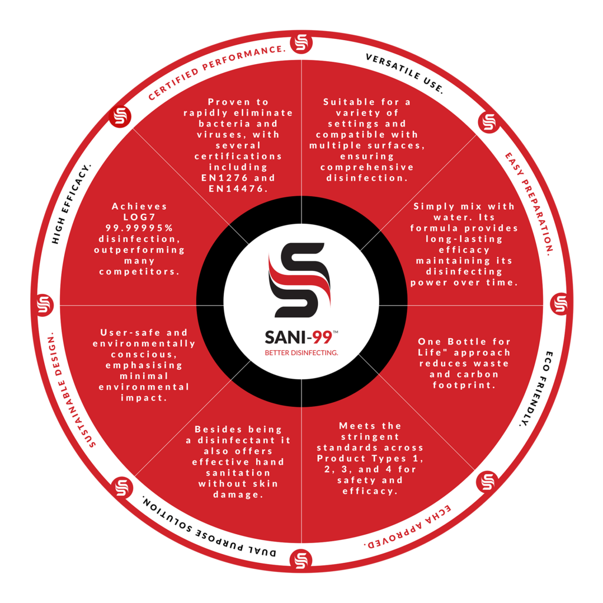
Key Features
SANI-99™ plays a pivotal role in ensuring cleanliness and hygiene across various sectors. Its advanced formulation has positioned it as a cornerstone of sanitation protocols in critical industries such as healthcare facilities, food industries, education, hospitality, public transportation, and office spaces.
In healthcare settings, SANI-99™ contributes to maintaining sterile and safe environments, safeguarding patients, medical personnel, and visitors from harmful pathogens. In the food industry, it upholds rigorous sanitation standards to prevent foodborne illnesses, ensuring consumer safety. Educational institutions benefit from SANI-99™ by creating clean and infection-free environments conducive to learning. Moreover, the hospitality sector relies on its potent disinfection capabilities to provide guests with a reassuringly hygienic experience. Even in high-traffic environments like public transportation, SANI-99™ helps curb the spread of germs, fostering safe travel conditions. Offices and fitness centres also implement SANI-99™ to cultivate healthy spaces for employees and clients alike.
Standards & Certifications
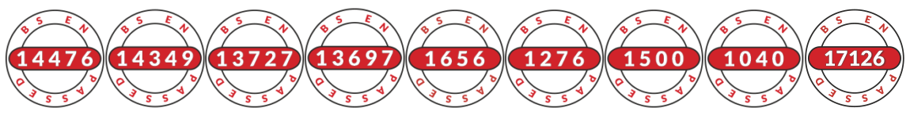
What is Log Reduction?
When it comes to infection control, measuring the effectiveness of a product in reducing pathogens is crucial. This effectiveness is often expressed through ‘Log Reductions’, which indicate the degree to which bacteria and other infectious agents are eliminated. The higher the log reduction, the more effective the product is at killing these pathogens. With SANI-99™, you can trust in its outstanding performance, as it achieves a remarkable 7-Log reduction, resulting in a pathogenic reduction of 99.99995%.
What sets SANI-99™ apart is its long-lasting impact. Unlike many other products, SANI-99™ doesn’t evaporate quickly. Instead, it remains on surfaces and hands for extended periods, ensuring continuous protection. In fact, SANI-99™ has been rigorously tested following the European standard EN lab protocol, and the results are impressive. It has been confirmed that SANI-99™ effectively eliminates pathogenic bacteria in just 10 seconds, providing rapid and reliable protection. Even for stubborn contaminants, SANI-99™ delivers exceptional results within a span of 5 minutes.
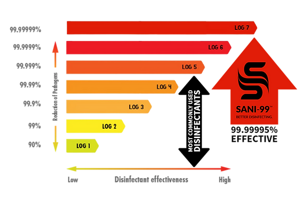
With its high log reduction and long-lasting effect, SANI-99™ surpasses expectations in infection control. It not only eliminates pathogens effectively but also provides sustained protection, giving you peace of mind in various environments. Trust in SANI-99™ to deliver the superior performance you need for a safer and healthier environment.
Advanced Disinfection for Legionella Control
SANI-99™ offers an innovative solution to tackle Legionella pneumophila, a dangerous waterborne pathogen responsible for Legionnaires’ disease. Common in environments like cooling towers, spa pools, and complex plumbing systems, Legionella presents a severe health risk if not managed effectively. Traditional methods such as chlorination often fail to address the bacterium’s resilience within biofilms, protective layers that allow Legionella to survive even after treatment.
Why Choose SANI-99™ for Legionella Control?
- Penetrates and Dismantles Biofilms: Unlike conventional disinfectants, SANI-99™ breaks down biofilms, ensuring comprehensive eradication of Legionella bacteria.
- Proven Effectiveness: Scientific studies demonstrate SANI-99™’s capability to eliminate Legionella colonies entirely, achieving complete disinfection in as little as 10 days.
- Residual Protection: The unique formula prevents bacterial regrowth, offering long-lasting safety for water systems.
- Environmentally Friendly: Free from harsh chemicals, SANI-99™ is biodegradable and safe for both users and the environment.
- Cost-Effective: Its high efficacy and long-lasting effects reduce the need for frequent applications, lowering maintenance costs.
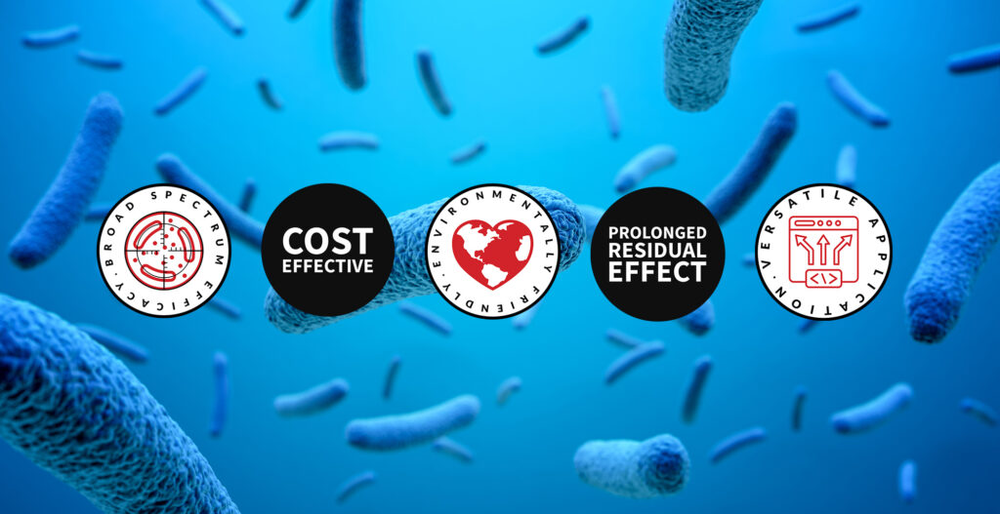
Applications for Legionella Treatment
SANI-99™ can be seamlessly integrated into various water systems, including:
- Cooling Towers: Removes biofilms and ensures optimal water quality.
- Cold & Hot Water Storage Tanks: Maintains safe water supplies by eliminating contamination risks.
- Spas, Pools, and Commercial Water Systems: Provides peace of mind with effective pathogen control.
Certified Compliance
SANI-99™ meets stringent European standards, including EN1276, EN13697, and EN13727, ensuring its effectiveness and safety for use in healthcare, hospitality, and industrial settings.
For detailed guidance, applications, and compliance information, request the full brochure below:
Unmatched Treatment for Black Mould Control
SANI-99™ provides an innovative solution to tackle black mould, a persistent and harmful problem in damp and poorly ventilated environments. Common in areas like basements, bathrooms, kitchens, and HVAC systems, black mould poses serious health risks, including respiratory issues and allergies, while also compromising structural integrity. Traditional methods often fail to eliminate mould spores completely or prevent regrowth, leaving spaces vulnerable to recurring contamination.
Why Choose SANI-99™ for Black Mould Treatment?
- Deep Penetration and Spore Elimination: SANI-99™ targets and eradicates mould at its source, breaking down spores to ensure thorough treatment.
- Prevents Regrowth: Its unique formula creates a protective barrier, stopping mould from returning even in damp conditions.
- Proven Effectiveness: Scientifically validated to eliminate 99.99995% of mould spores, SANI-99™ delivers superior results in both residential and commercial environments.
- Residue-Free and Safe: Unlike harsh chemical treatments, SANI-99™ leaves no harmful residues, protecting surfaces and maintaining a safe space for occupants.
- Eco-Friendly Solution: Chlorine-free, alcohol-free, and biodegradable, SANI-99™ is designed to minimise environmental impact while delivering powerful results.
- Cost-Effective: Long-lasting protection reduces the need for frequent applications, lowering maintenance costs and improving efficiency.
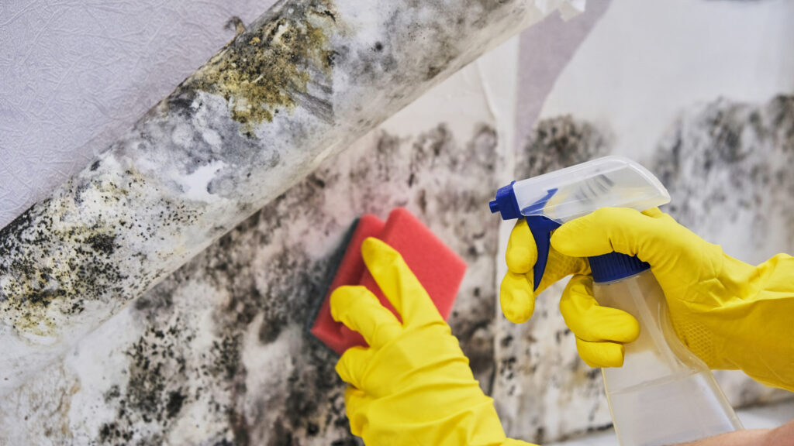
Applications for Black Mould Treatment
SANI-99™ is ideal for mould-prone environments, including:
- Bathrooms and Wet Areas: Eradicates mould from tiles, grout, and fixtures to maintain hygiene and safety.
- Basements and Crawl Spaces: Addresses mould in poorly ventilated areas, preventing damage to infrastructure and stored items.
- HVAC Systems: Cleans ducts and vents to stop the spread of mould spores and improve air quality.
- Commercial Kitchens and Food Storage: Maintains safe conditions in damp environments where mould threatens health and hygiene.
Certified Compliance
SANI-99™ meets stringent European standards, including EN 13697 and EN 1656, certifying its fungicidal efficacy and safety for use in a wide range of settings.
For detailed guidance, applications, and compliance information, request the full brochure below:
Environmentally Responsible
Traditional alcohol-based disinfectants and sanitisers have contributed significantly to the global plastic bottle pollution crisis. Recognising this issue, SANI-99™ was purposefully developed in powder form to address the environmental impact. With SANI-99™, we have taken a proactive approach to minimise plastic waste.
By formulating SANI-99™ as a powder, we eliminate the need for pre-mixed solutions in single-use plastic bottles. Instead, our innovative approach allows for easy preparation by simply mixing a 6g sachet with water using our specially designed 1-litre “One bottle for Life”. This means there is no need to purchase a new bottle each time the disinfectant is replenished — you can simply refill and reuse the existing bottle.
The benefits of SANI-99™ extend beyond reducing plastic waste. Compared to transporting pre-mixed disinfectants and sanitisers, the compact size and lightweight nature of our sachets significantly reduce transportation requirements. For instance, transporting 2 million litres of pre-mixed disinfectant would typically require sixty-six 30-ton trucks. In contrast, the same quantity of SANI-99™, equivalent to 2 million litres, can be transported using just one 30-ton truck. This substantial reduction in transportation needs contributes to a significant decrease in carbon emissions and fuel consumption.

66 Trucks
Transportation requirements for 2 million litres of pre-mixed disinfectant
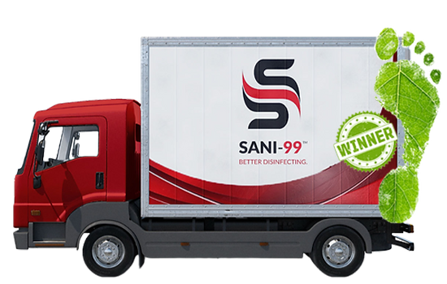
1 Truck
Transportation requirements for 2 million litres of SANI-99™ disinfectant
The COVID-19 pandemic has led to an alarming five-fold increase in plastic bottle contamination, resulting in hundreds of millions of additional bottles polluting our planet in just one year. At our organisation, we acknowledge the severity of the climate crisis and our responsibility to take action against the harmful effects of plastic waste on our environment. That’s why we have taken deliberate steps to design our medical-grade hand and surface disinfectant with a focus on reducing and, wherever possible, eliminating plastic bottle contamination.
With our “One bottle for Life” principle, we are committed to both caring for people and preserving the environment. This achievement is a source of immense pride for us. By embracing this principle, you can ensure that as long as you possess a SANI-99™ disinfectant sachet and access to water, you will always have a powerful and effective disinfectant at your disposal.
Key Characteristics

Triple FoilHIGH QUALITYSACHET
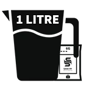
1 Sachet =1 LITRE

Medical GradeDISINFECTANT

UnbeatableEFFICACY
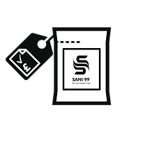
AffordableCOMPETITIVELYPRICED
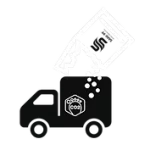
Powder SolutionLIGHTWEIGHTTO TRANSPORT
Instructions for Use
To prepare the solution, use the “One Bottle for Life” and dilute the contents of one sachet (6g) in 1 litre of water. After use, remember to turn the nozzle to the OFF position to prevent any accidental leakage or spills. For proper storage, keep the container upright in a cool, dry place away from direct sunlight. Avoid exposing to high temperatures; store at room temperature to maintain effectiveness.
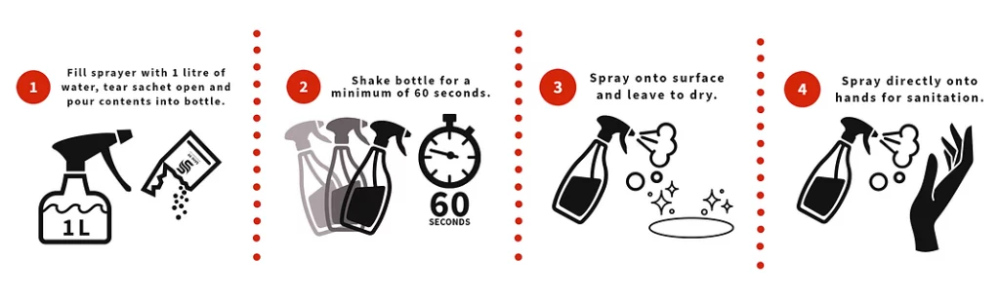
*Human error accounts for approximately 85% of low disinfecting efficacy results. When applying a disinfectant, the user must carefully follow instructions to ensure optimum results. For other dosages please refer to packaging.
Video Playlist
Alcohol Based Disinfectants
SANI-99™
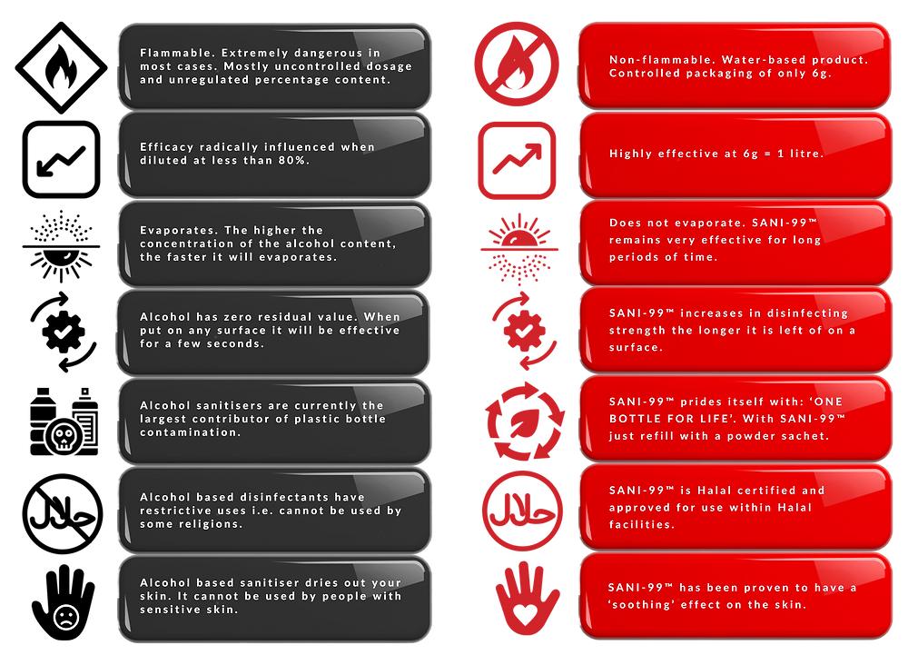
Product Range
Take a moment to explore our range of SANI-99™ products. We continuously update our brochure to ensure you have the latest information on our offerings. Stay connected by visiting this page and following us on social media, as we frequently introduce new products and promotions to keep you informed and engaged.
If you have any questions or need further information, our FAQ section is a valuable resource that provides detailed answers to common queries. Alternatively, feel free to reach out to us directly. Our team is ready to assist you and demonstrate how SANI-99™ can revolutionise your disinfectant and sanitation requirements.